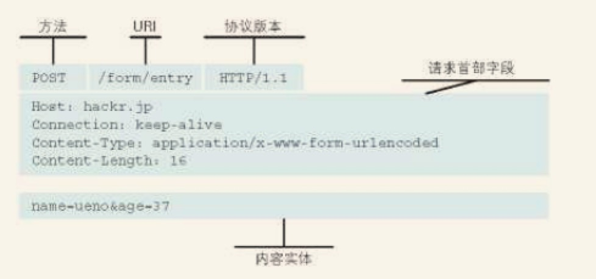
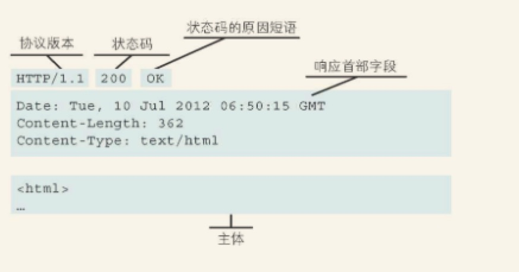
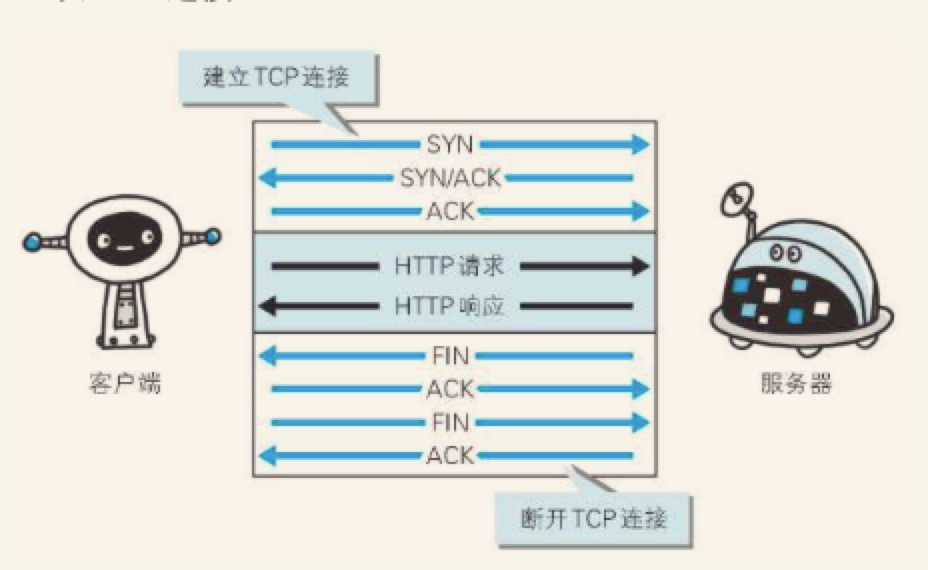
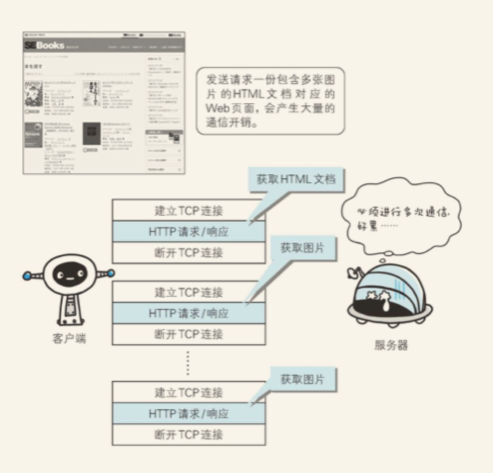
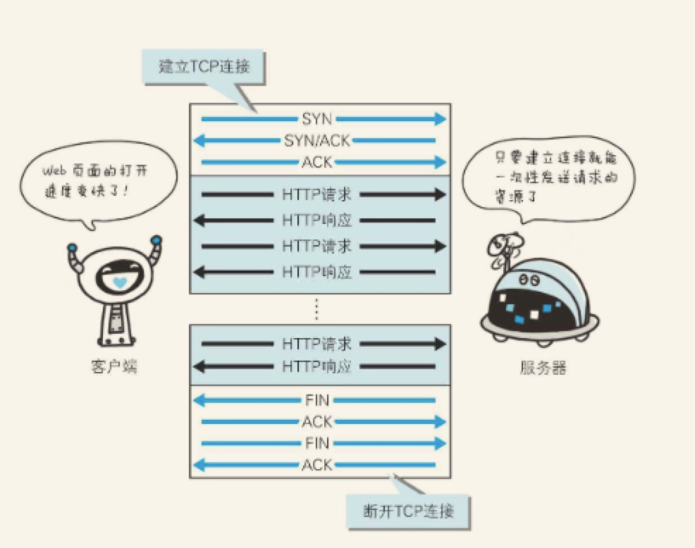

第二章：简单的HTTP协议
本章主要对HTTP协议结构进行讲解，主要使用HTTP/1.1
1.HTTP协议用于客户端和服务端之间的通信
HTTP协议和TCP/IP协议族内的其他众多的协议相同，用于客户端和服务器之间的通信。
请求访问文本或图像等资源的一端称为客户端，而提供资源响应的一端称为服务器端。
在两台计算机之间使用HTTP协议通信时，在一条通信线路上必定有一端是客户端，另一端则是服务器端。
2.通过请求和响应的交换达成通信
HTTP协议规定，请求从客户端发出，最后服务器端响应该请求并返回。换句话说，肯定是先从客户端开始建立通信的，服务器端在没有接收到请求之前不会发送响应。
请求是由请求方法、请求URI、协议版本、可选的请求首部字段和内容实体构成的。

图：请求报文的组成
响应报文基本上由协议版本、状态码（标识请求成功或失败的数字代码）、用以解释状态码的原因短语、可选的响应首部字段以及实体主体构成。

图：响应报文的组成
3.HTTP是不保存状态的协议
HTTP是一种不保存的状态，即无状态协议。HTTP协议自身不对请求和响应之间的通信状态进行保存。也就是说在HTTP这个级别，协议对于发送过的请求或响应都不做持久化处理。
每当有新的请求时，就会有对应的新响应产生。协议本身并不保留之前一切的请求或响应报文的信息。这是为了更快地处理大量事务，确保协议的可伸缩性，而特意把HTTP协议设计成如此简单的。
HTTP 虽然是无状态协议，但为了实现期望的保持状态功能，于是引入了Cookie 技术。
4.请求URI定位资源
HTTP协议使用URI定位互联网上的资源，正是因为URI的特定功能，在互联网上任意位置的资源都能访问到。
当客户端请求访问资源而发送请求时，URI需要将作为请求报文中的请求URL包含在内。
除此之外，如果不是访问特定资源而是对服务器本身发起请求，可以用一个*来代替请求URI，
5.请求URI定位资源
GET:获取资源
GET方法用来请求访问已被URI识别的资源。指定的资源经服务器端解析后返回响应内容。如果请求的是文本，那就保持原样返回；如果是像CGI那样的程序，则返回经过执行后的输出结果。
POST：传输实体主体
POST方法用来传输实体的主体
虽然用GET方法也可以传输实体的主体，但一般不用GET方法进行传输。虽然POST 的功能与GET很相似，但POST的主要目的并不是获取响应的主体内容。
PUT：传输文件
PUT方法用来传输文件。就像FTP协议的文件上传一样，要求再请求报文的主体中包含文件的内容，然后保存到请求URI指定的位置。
缺点：但是，鉴于HTTP/1.1的PUT方法自身不带验证机制，任何人都可以上传文件，存在安全性问题，一次一般的Web网站不使用该方法。
HEAD：获取报文首部
HEAD 方法和GET方法一样，只是不返回报文主体部分。用于确认URI的有效性及资源更新的日期时间等。
DELETE：删除文件
DELETE方法用来删除文件，是与PUT相反的方法。DELETE方法按请求URI删除指定的资源。
缺点：但是，HTTP/1.1的DELETE方法本身和PUT方法一样不带验证机制，所以一般WEB网站也不使用DELETE方法。
OPTIONS:询问支持的方法。
OPTIONS 方法用来查询针对请求URI指定的资源支持的方法。
TRACE：追踪路径
TRACE 方法是让Web服务器将之前的请求通信环回给客户端的方法。
发送请求时，在Max-Forwards 首部字段中填入数值，每经过一个服务器就将该数字减1，当数值刚发哦减到0时，就停止继续传输，最后接受到请求的服务器端则返回状态码 200 OK的响应
客户端通过TRACE 方法可以查询发出的请求是怎么样被加工修改/篡改的。这是因为，请求想要连接到原目标服务器可能会通过代理中转，TRACE就是用来确认连接过程中发生的一系列操作。
但是，TRACE方法本来就不常用，再加上它容易引发XST攻击，通常不会用到。
CONNECT：要求用隧道协议连接代理
CONNECT 方法要求在与代理服务器通信时建立隧道，实现用隧道协议进行TCP通信。主要使用SSL（安全套接层）和TLS（传输层安全）协议把通信内容加密后经网络隧道传输。
6.使用方法下达命令
向请求URI指定的资源发送请求报文时，采用称为方法的命令。
方法的作用在于，可以指定请求的资源按期望产生某种行为。方法中有GET、POST和HEAD等。
下表列出了HTTP/1.0和HTTP/1.1支持的方法。另外方法名区分大小写，注意要用大写字母
| 方法 | 说明 | 支持的协议版本 |
|---|---|---|
| GET | 获取资源 | 1.0、1.1 |
| POST | 传输实体主体 | 1.0、1.1 |
| PUT | 传输文件 | 1.0、1.1 |
| HEAD | 获得报文首部 | 1.0、1.1 |
| DELETE | 删除文件 | 1.0、1.1 |
| OPTIONS | 询问支持方法 | 1.1 |
| TRACE | 追踪路径 | 1.1 |
| CONNECT | 要求用隧道协议连接代理 | 1.1 |
| LINK | 建立和资源之间的联系 | 1.0 |
| UNLINK | 断开连接关系 | 1.0 |
7.持久连接节省通信量
HTTP协议的初始版本中，每进行一次HTTP通信就要断开一次TCP连接。

比如，使用浏览器浏览一个包含多张图片的HTML页面时，在发送请求访问HTML页面资源的同时，也会请求该HTML页面包含的其他资源。因此，每次的请求都会造成无谓的TCP链接建立和断开，增加通信量的开销。

持久连接
为解决上述TCP连接的问题，HTTP/1.1和一部分的HTTP/1.0想出了持久连接（也称为HTTP keep-alive或 HTTP connection reuse）的方法。
持久连接的特点是，只要任意一端没有明确提出断开连接，则保持TCP连接状态。

持久连接的好处在于减少了TCP连接的重复建立和断开所造成的额外开销，减轻了服务器端的负载。
在HTTP/1.1中，所有的链接默认都是持久连接，但在HTTP/1.0并未标准化。虽然有一部分服务器通过非标准的手段实现了持久连接，但服务器端不一定能支持持久连接。毫无疑问，除了服务器端，客户端也需要支持持久连接。
管线化
持久连接使得多数请求以管线化方法发送成为可能。从前发送请求后需等待并收到响应，才能发送下一个请求。管线化技术出现后，不用等待响应亦可直接发送下一个请求。
这样就能够做到同时并行发送多个请求，而不需要一个接一个地等待响应了。
HTTP是无状态协议，它不对之前发生过的请求和响应的状态进行管理。也就是说，无法根据之前的状态进行本次的请求处理。
假设要求登录认证的页面无法进行状态的管理，那么每次登录都要附加参数来管理登录状态。
当然，无状态协议也有它的优势，由于不必保存状态，自然减少了服务器的CPU及内存资源的小号哦。
保留无状态协议这个特征的同时又要解决类似的矛盾问题，于是引入了Cookie技术。Cookie通过在请求和响应报文中写入Cookie信息来控制客户端的状态
Cookie 会根据从服务器端发送的响应报文内的一个叫做Set-Cookie的首部字段消息，通知客户端保存Cookie.当下次客户端再往该服务器发送请求时，客户端会自动在请求报文中加入Cookie 值后发送出去，
1.请求报文（没有cookie信息的状态）
1 | GET /reader/ HTTP/1.1 |
2.请求报文（没有cookie信息的状态）
1 | HTTP /1.1 200 OK |
2.请求报文（自动发送保存着的Cookie信息）
1 | GET /image/ HTTP/1.1 |